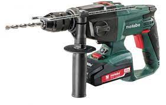
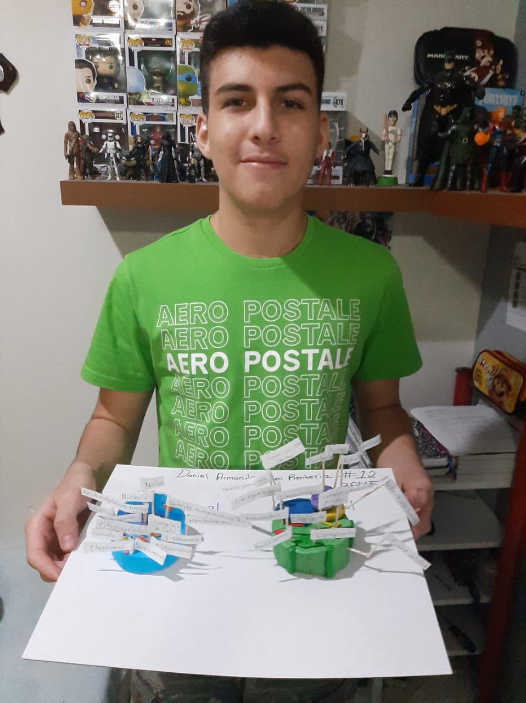

Este naco es de culichi town como todos nosotros, ¿qué esperabas algo más?, bueno este corriente es fan de los taladros tailandeses mecatronica elevado a la cosiente, wacha un taladro:

Este tilinoide muy de los taladros, pero que molesto, entonces sigamos pues este tilin destaca en estas cosas:
1.- Fan a tope de los taladros
2.- Cuando le dices que guarde silencio lo hace
3.- Ahi esta en tu vida para hacerla triste
Pero nadie es perfecto como el nacho asi que este tiene defectos y son estos xd que tonto:
1.- Le gusta muerte en hawai que perro asco
2.- Es fan del AMERICA XDDDD
3.- Es naco
4.- Su vocabulario se basa puras groserias
5.- Es bien griton
6.- Tiene una cachucha que dice CockxD wtf

Tambien este pedazo de gato tiene apodos y todos fueron por el nacho WTF, y lit todos terminan con "iel" wow y son:
1.- Ratiel, el que inicio todo y del que salieron sus variantes
2.- Sharkiel
3.- Pendejiel
4.- Sapiel
5.- Tontiel
6.- Putiel
7.- Chaquetiel
8.- Jotiel